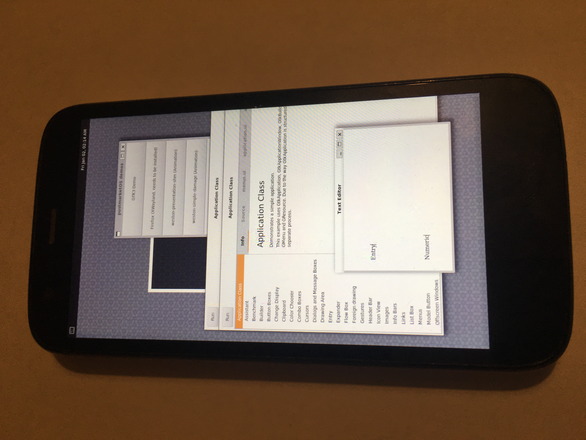

Motorola Moto G 2013 (motorola-falcon)
|
 Moto G 2013 running Weston | |
| Manufacturer | Motorola |
|---|---|
| Name | Moto G (1st gen) |
| Codename | motorola-falcon |
| Released | 2013 |
| Category | testing |
| Original software | Android 4.3 - 5.1 on Linux 3.4.42 |
| postmarketOS kernel | 3.4.113 |
| Hardware | |
| Chipset | Qualcomm Snapdragon 400 (MSM8226) |
| CPU | Quad-core 1.2 GHz Cortex-A7 |
| GPU | Adreno 305 |
| Display | 720x1280 IPS LCD |
| Storage | 8 GB |
| Memory | 1 GB |
| Architecture | armv7 |
| Unixbench Whet/Dhry score | 877.9 |
{kind=link}
| USB Networking |
Works
|
|---|---|
| Flashing |
Works
|
| Touchscreen |
Works
|
| Display |
Works
|
| WiFi |
Works
|
| FDE | |
| Mainline | |
| Battery | |
| 3D Acceleration | |
| Audio | |
| Bluetooth |
Broken
|
| Camera | |
| GPS | |
| Mobile data | |
| SMS | |
| Calls | |
| USB OTG | |
| NFC |
Unavailable
|
| Accelerometer | |
|---|---|
| Magnetometer | |
| Ambient Light | |
| Proximity | |
| Hall Effect | |
| Barometer | |
| Power Sensor | |
| Camera Flash | |
|---|---|
| Keyboard | |
| Touchpad | |
| USB-A | |
| HDMI/DP | |
| Ir TX |
Unavailable
|
| Ir RX | |
| Stylus | |
| Haptics | |
| Ethernet | |
| FOSS bootloader | |
Contributors
Users owning this device
- AAT596 (Notes: LineageOS 17.1)
- Egbert (Notes: currently used as remote control)
- Little-miss-synth (Notes: bootloader unlocked, running a stripped down instance of lineageOS and used as a digital audio player)
- Living
- Maxnet (Notes: cannot unlock bootloader anymore in the official way)
- Roboe (Notes: (lended) hwrev: 0x83C0, cpu: MSM8226 CS, emmc: 16GB; unreliable eMMC; running debloated Lineage OS 14.1 as a portable radio FM)
- StandaSK
- UltrasonicMadness (Notes: Screen doesn't work and the battery lid is missing)
Untested
- Interfaces other than weston (plasma, xfce4 are not working yet)
- Using full disk encryption
Installing
There appears to be no special process to flashing the device, as long as the bootloader is unlocked first
Once you're in fastboot by holding down Volume Down + Power, flashing it is as follows:
$ pmbootstrap init
$ pmbootstrap install
$ pmbootstrap flasher flash_rootfs
$ pmbootstrap flasher boot
You can also use $ pmbootstrap flasher flash_kernel to flash the kernel, however this breaks the charging splash screen
Installation from recovery zip without pmbootstrap, copy to SD Card works, in this case using usb-otg; same caveat regarding charging.
Useful stuff
Similar to the Moto G 2014, the LED can be controlled:
$ echo 255 > /sys/devices/leds-qpnp-rgb-e1dba000/leds/white/brightness
Hardware Status
$ sudo hwtest gives:
| Category | Model | Path | Status | Value |
|---|---|---|---|---|
| framebuffer | mdssfb_80000 | /sys/class/graphics/fb0 | Working | U:720x1280p-54 |
| input | gpio-keys | /dev/input/event5 | Working | |
| input | qpnp_pon | /dev/input/event4 | Working | |
| input | light-prox | /dev/input/event3 | Working | |
| input | synaptics_dsx_i2c | /dev/input/event2 | Working | |
| input | accelerometer | /dev/input/event1 | Working | |
| input | compass | /dev/input/event0 | Working |
Note: XT1031 shows as MSM8x26 in /proc/cpuinfo:
Hardware : Qualcomm MSM8626
Revision : 83c0
Device : falcon
Radio : 3
MSM Hardware : MSM8626 CSBattery
As mentioned in #Installation charging-sdl is not supported, but charging works during usb networking. Battery/charging properties are exposed at /sys/class/power_supply/battery/.
Charger versus power key boot shows these differences in /proc/cmdline:
androidboot.mode=mot-charger | androidboot.mode=normal
androidboot.powerup_reason=0x00000100 | androidboot.powerup_reason=0x00000080
bootreason=charger | bootreason=power_key_pressUSB-OTG
Based on dmesg content (only), usb-otg connect/disconnect is recognized.
TODO
- Try using the newest GCC from Alpine
- Test additional functionality, interfaces, etc.
- Maintain the device